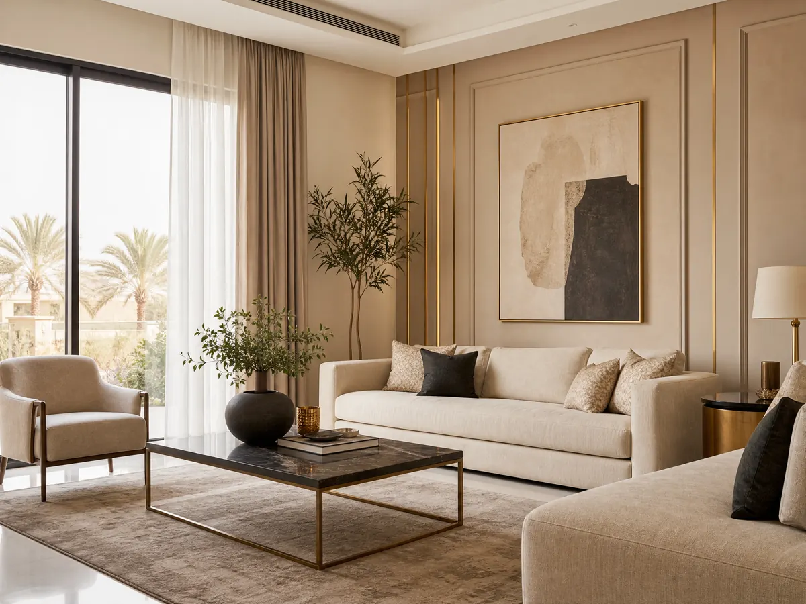

معلم دهانات داخلية: 4 اختيارات تغيّر شكل منزلك 053 116 9312
اختيار معلم دهانات داخلية ليس مجرد خطوة لتغيير لون الجدران، بل قرار يحدد شكل منزلك والإحساس الذي يمنحه لك كل يوم فقد تبدو الغرفة واسعة ومريحة مع درجة لونية مناسبة، بينما تجعلها الألوان غير المتناسقة أقل انسجام مهما كان الأثاث جميل.
والنتيجة التي تستحقها تبدأ من فهم احتياجات كل مساحة واختيار الخامة المناسبة، والتأكد من سلامة الجدران قبل تنفيذ التشطيب وإذا كنت تخطط لتجديد منزلك في الرياض فمن المهم أيضًا التفكير في علاقة الدهانات بعناصر الديكور الأخرى، مثل الجبس بورد وورق الجدران والتكسيات، حتى تحصل على تصميم متكامل بدلًا من تغييرات منفصلة لا تجمعها رؤية واحدة.
معلم دهانات داخلية
قبل اختيار معلم دهانات داخلية أو تحديد اللون اسأل نفسك عن النتيجة التي تريدها من التجديد، فدهان غرفة النوم يختلف في احتياجاته عن الصالة أو الممر، كما تختلف متطلبات المنزل الجديد عن الجدران التي تحتاج إلى إصلاح وتجديد، وتساعدك هذه النقاط على تحديد طلبك بوضوح:
- تجديد غرفة كاملة: حدد اللون والتشطيب المطلوبين، وانتبه إلى مساحة الغرفة وكمية الضوء الطبيعي والأثاث الموجود فيها.
- إعادة طلاء جدران قديمة: افحص حالة الدهان السابق، لأن التقشر أو التشققات قد تتطلب معالجة قبل وضع اللون الجديد.
- تجهيز منزل جديد: ضع تصور للألوان الأساسية قبل شراء الأثاث والستائر، حتى يسهل تنسيق العناصر دون تغييرات مكلفة لاحقًا.
- تجديد مساحة محددة: إذا كان التغيير يشمل جدار واحد فقط، فاختر درجة تكمل بقية ألوان الغرفة ولا تبدو منفصلة عنها.
اقرأ أيضًا: معلم جبس بورد شمال الرياض: 0531169312 أحدث التصميمات العصرية
أفضل معلم دهانات داخلية: كيف تقيّم جودة التنفيذ؟
أفضل اختيار معلم دهانات داخلية ليس بالضرورة صاحب الإعلان الأكثر جاذبية أو السعر الأقل، بل من يستطيع فهم المطلوب وتوضيح طريقة التنفيذ والتكلفة قبل البدء، وعند مقارنة الخيارات المتاحة في الرياض من المفيد تقييم جودة العمل نفسه بدلًا من الاكتفاء بالوعود التسويقية:
- شاهد نماذج أعمال فعلية: ركز على استواء السطح وانتظام اللون والحواف، وليس على جمال الغرفة المصورة وحده.
- اطلب وصفًا واضحًا للخدمة: يجب أن تعرف هل يشمل الاتفاق تجهيز الجدران والمواد والدهان النهائي، أم يقتصر على جزء من العمل.
- ناقش العيوب الموجودة: اسأل كيف ستتم معالجة التشققات والتقشر، ولا تفترض أن طبقة جديدة ستخفي جميع المشكلات.
- قارن عروض الأسعار على أساس واحد: تأكد من تقارب نوع الدهان وعدد الطبقات والأعمال المشمولة قبل الحكم على العرض الأرخص.
- اتفق على موعد التسليم: ضع جدولًا واقعيًا يراعي مساحة المكان وحالة الجدران والوقت اللازم لجفاف المواد.
اللون وحده لا يكفي: اختيارات تؤثر في شكل الغرفة
تخيل غرفة بأثاث أنيق لكن لون جدرانها لا يتناسب مع الإضاءة أو الستائر قد تبدو النتيجة مزدحمة رغم جودة كل قطعة بمفردها، لهذا فإن اختيار الدهان يحتاج إلى النظر إلى الغرفة باعتبارها مساحة متكاملة وليست جدار منفصل عن بقية العناصر.
الألوان الفاتحة مثل الأبيض المائل إلى الدفء والدرجات البيجية قد تساعد على منح المكان إحساسًا بالاتساع والهدوء، خصوصًا عند تنسيقها مع أثاث مناسب أما الدرجات الداكنة فيمكن استخدامها لإبراز جدار معين أو خلق تباين بصري، بشرط ألا تطغى على المساحة والإضاءة.
ولا تعتمد على شكل اللون في شاشة الهاتف، فقط اطلب عينة صغيرة أو راجع بطاقة اللون في إضاءة قريبة من إضاءة منزلك فالدرجة الواحدة قد تبدو مختلفة بين ضوء النهار والإضاءة الاصطناعية، كما قد يتغير إحساسك بها عندما تجاور الأثاث والأرضيات، وللوصول إلى اختيار متناسق اتبع هذا الترتيب:
- حدد الأثاث والعناصر الرئيسية التي ستبقى في الغرفة.
- اختر مجموعة محدودة من الألوان المتوافقة بدلًا من جمع درجات كثيرة.
- قارن اللون المختار بالأرضيات والستائر والأبواب.
- جرب العينة في أكثر من وقت من اليوم قبل اعتمادها نهائيًا.
بهذه الطريقة يصبح اختيار معلم دهانات داخلية جزء من خطة تجديد واضحة، وليس مجرد تنفيذ لون تم اختياره على عجل.
مطفي أم حريري؟ اختَر التشطيب وفق استخدام المكان
درجة اللون ليست القرار الوحيد الذي يستحق الاهتمام، فمستوى اللمعان يؤثر أيضًا في المظهر وطريقة ظهور عيوب الجدار، ولا توجد لمعة واحدة هي الأفضل لكل الغرف لأن الاختيار يعتمد على طبيعة الاستخدام وحالة السطح والنتيجة التي تفضلها:
- غرف النوم والمساحات الهادئة، حيث قد يناسبك المظهر المطفي إذا كانت متطلبات التنظيف تسمح بذلك.
- الممرات والمساحات كثيرة الاستخدام، حيث ينبغي الاهتمام بقابلية تنظيف الدهان وتحمله وفق مواصفات المنتج.
- الجدران التي تحتوي على عيوب، إذ يفضل تقييمها ومعالجتها قبل اختيار تشطيب قد يبرز التفاوتات.
- المناطق التي تتعرض للبقع، حيث يجب مراجعة تعليمات الشركة المصنعة بشأن التنظيف ومقاومة البقع بدلًا من الاعتماد على اسم التشطيب وحده.
وعند مناقشة هذه الخيارات مع الفني المختص، اطلب اسم المنتج ومواصفاته وطريقة العناية به بعد التنفيذ فالمهم ليس أن يبدو الجدار جميلًا عند التسليم فقط، بل أن يكون التشطيب مناسبًا لطبيعة استخدامك اليومي.
تابع أيضاً: معلم ديكورات جبس بورد | 0531169312 لخدمات بلمسة عصرية
ديكورات الأحلام: عندما تريد تجديد الجدران بطريقة مختلفة
ليس كل تجديد للجدران يتطلب تغيير لونها ففي بعض المنازل يكون الحل الأنسب هو إضافة خامة أو تفصيل ديكوري يغير شكل المساحة، وهنا يأتي دور الفني المختص لدى ديكورات الأحلام وهي شركة في الرياض تعرض خدمات الديكور الداخلي للمنازل والفلل والمكاتب والمحلات التجارية، مع خيارات متنوعة لتنسيق الجدران والأسقف والأرضيات، ومن الخدمات المتاحة:
- تركيب الجبس بورد: لتنفيذ تصاميم للأسقف والجدران تضيف تفاصيل عصرية إلى المكان.
- بديل الرخام: لمن يرغب في مظهر أنيق للجدران باستخدام أحد الحلول الديكورية المتاحة لدى الشركة.
- ورق الجدران: لاختيار نقوش وتصاميم تضيف طابعًا خاصًا إلى الغرف.
- تركيب الباركيه: لإكمال شكل المساحة بأرضيات تتناسب مع الألوان والأثاث.
- التكسيات الخشبية والشيبورد: لإضافة تفاصيل وخامات متنوعة ضمن التصميم الداخلي.
- الديكورات الداخلية المتكاملة: لتنسيق عناصر متعددة في تصور واحد يناسب طبيعة المكان.
اطلع على: معلم تركيب شيبورد في الرياض: دقة في التنفيذ
الخاتمة
الفرق بين جدران عادية ومساحة تبدو متناسقة لا يصنعه اللون وحده بل مجموعة قرارات تبدأ من اختيار الدرجة والتشطيب المناسبين، وتمر بتجهيز السطح، وتنتهي بتنفيذ التفاصيل بدقة، لذلك عند البحث عن الفني المختص اجعل مواصفات العمل ووضوح التكلفة وحالة الجدران أساس المقارنة، بدلًا من اتخاذ القرار بناءً على السعر فقط، وإذا كان التجديد الذي تخطط له يتجاوز الدهان إلى تطوير شكل الغرف والجدران، فقد تساعدك حلول الديكور الداخلي على الوصول إلى نتيجة أكثر انسجام واستعرض خدمات ديكورات الأحلام المنشورة واختر العناصر التي تخدم تصميم منزلك فعلًا.
الأسئلة الشائعة
من هو أفضل معلم دهانات في الرياض؟
أفضل الفني المختص في الرياض هو الذي يستطيع فهم متطلبات المكان وتوضيح نوع المواد والتشطيب المقترح، وفحص حالة الجدران قبل التنفيذ، مع تقديم عرض سعر واضح يحدد الأعمال المشمولة، وللمقارنة بين الخيارات راجع نماذج الأعمال السابقة وتأكد من أن السعر يتضمن المتطلبات التي تحتاج إليها.
ما هو أفضل دهان للجدران الداخلية؟
لا يوجد نوع واحد يناسب جميع الجدران والغرف فالاختيار يتوقف على حالة السطح وطبيعة الاستخدام والتشطيب المرغوب فيه وسهولة التنظيف، قد يناسب الدهان المطفي بعض المساحات الهادئة، بينما تكون التشطيبات القابلة للتنظيف أكثر ملاءمة لبعض الأماكن كثيرة الاستخدام، لذلك من الأفضل مراجعة مواصفات المنتج واختيار ما يتناسب مع احتياجاتك.
أين يمكنني العثور على معلم دهانات في الرياض؟
يمكنك البحث عن الفني المختص في الرياض ومقارنة تفاصيل عروضهم وأعمالهم السابقة، مع التأكد من نوع الخدمة والمواد والتكلفة قبل التعاقد، أما ديكورات الأحلام، وموقعها في الرياض، فتعرض خدمات الديكور الداخلي مثل الجبس بورد وبديل الرخام وورق الجدران والباركيه والتكسيات الخشبية، ويمكنك زيارة الموقع أو الاتصال على 0531169312 للاستفسار عن خدماتها المتاحة.
هل تبحث عن تنفيذ احترافي لمشروعك؟
نحن في ديكورات الأحلام نوفر لك أفضل الخامات وأمهر الفنيين في الرياض.
تواصل معنا عبر واتساب